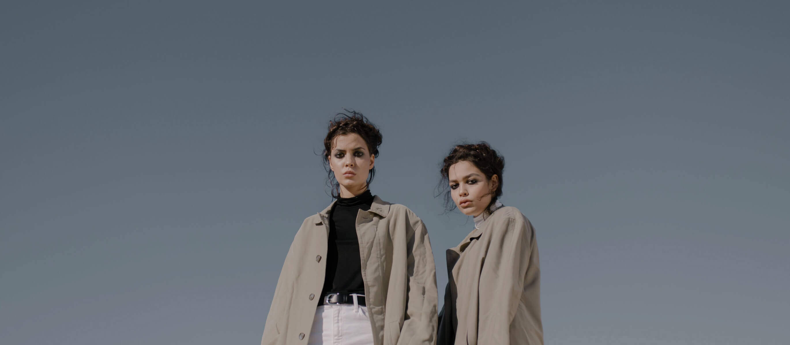
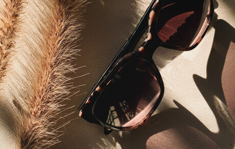

The Art of Effortless Style
Effortless style isn’t about following trends — it’s about expressing who you are with simplicity and confidence. At Ballylike, we believe that true fashion comes from comfort, authenticity, and the quiet power of good taste.
Think clean lines, neutral tones, and pieces that blend versatility with identity. Whether it’s a crisp white shirt, a soft beige tote, or relaxed-fit denim — the goal is to feel as good as you look.
“Style is when they notice you — but remember your energy more than your outfit.”
To master the art of effortless style, start by investing in timeless pieces. Build a wardrobe that evolves with you — not one that expires with each season. Combine soft fabrics with strong silhouettes and let minimalism do the talking.
From the streets of Harare to the calm corners of your workspace, let Ballylike inspire your daily expression — understated, yet unforgettable.
